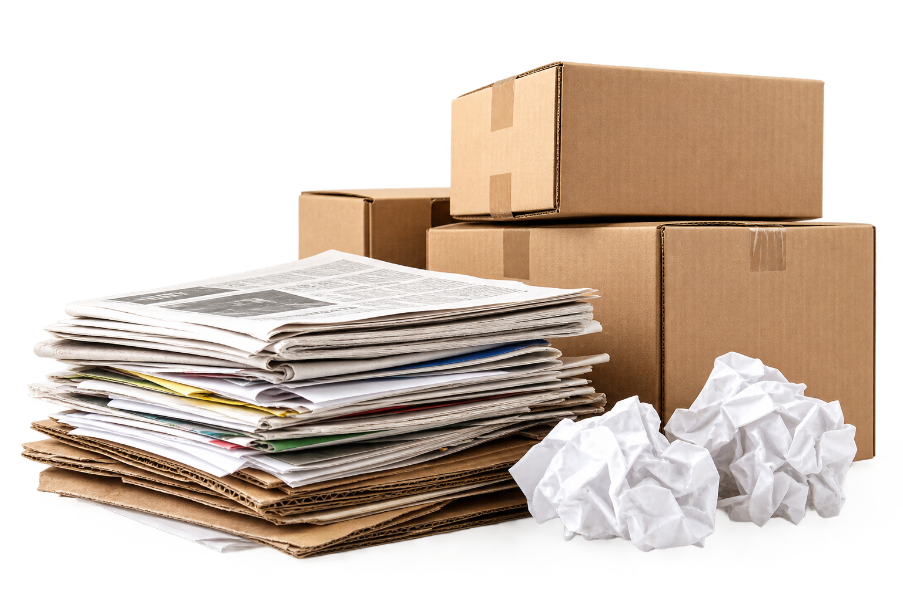
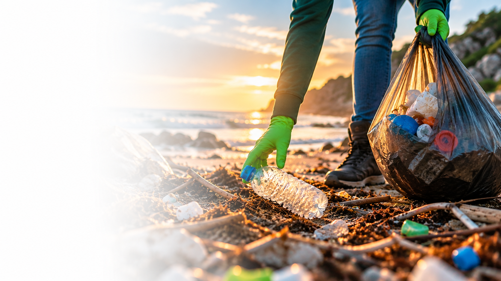
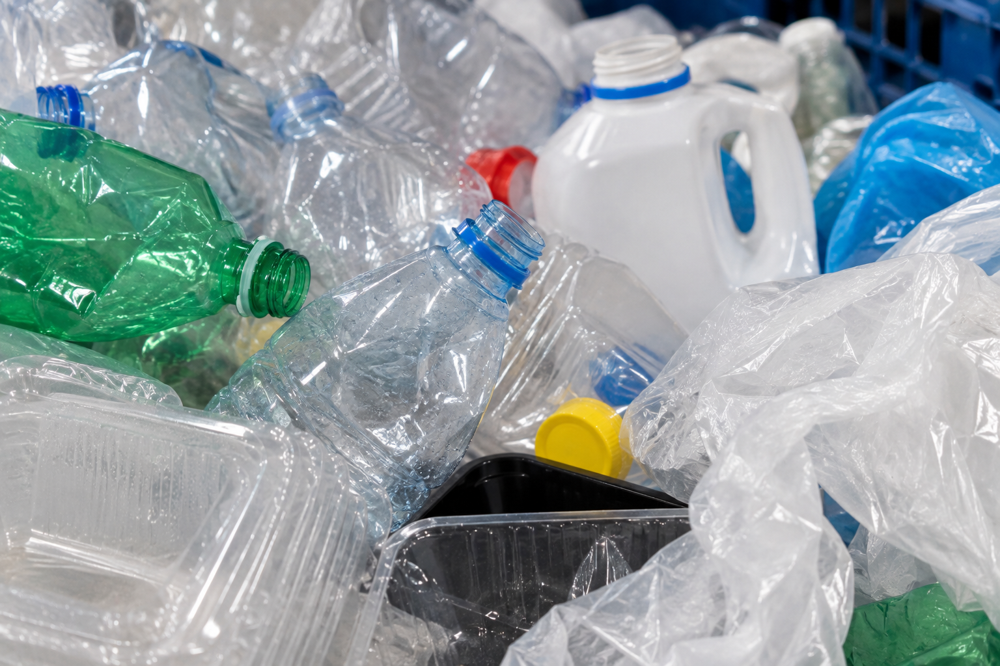
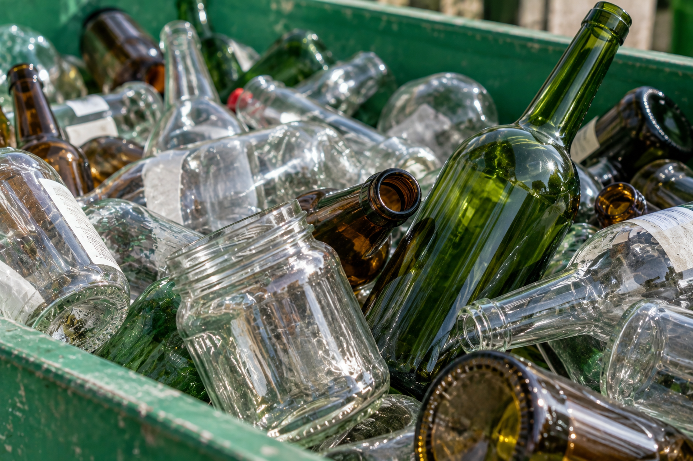
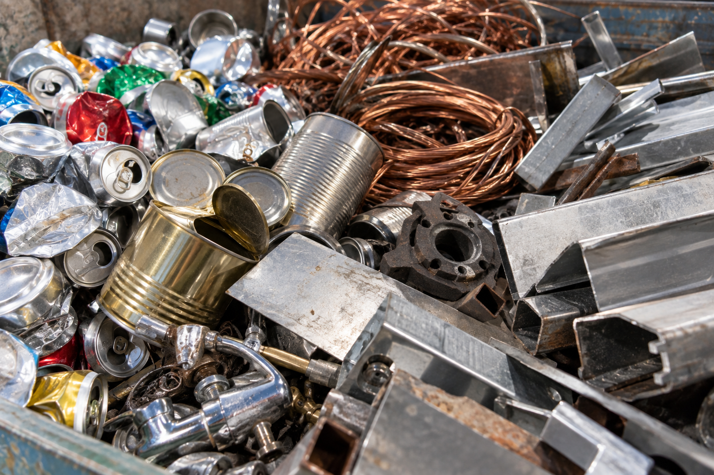
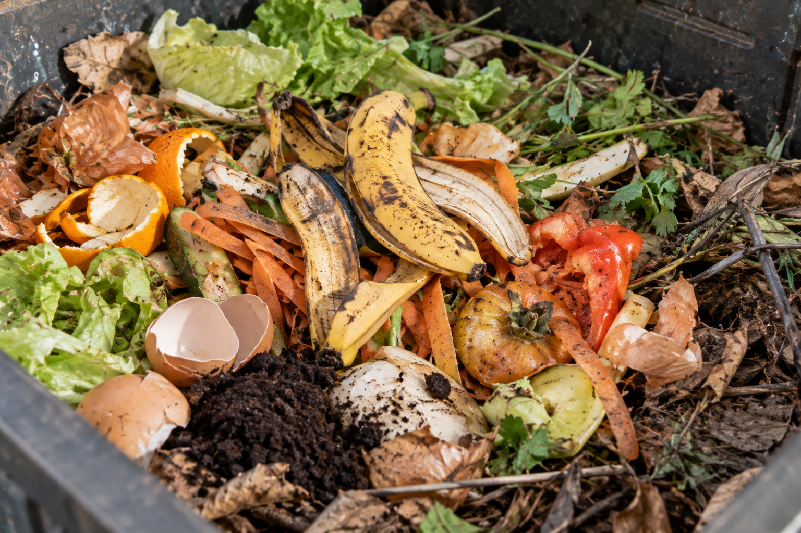
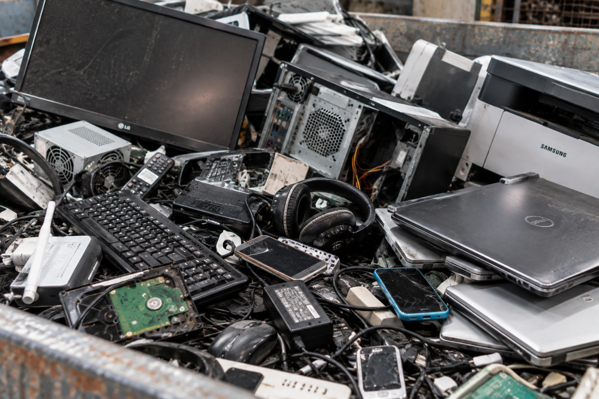

Papel e papelão
Jornais, revistas, caixas, folhas, cadernos e papel em geral.
Saiba mais →Reciclar é transformar materiais que seriam descartados em novos recursos, evitando o desperdício e contribuindo para a preservação do meio ambiente. A reciclagem é uma prática essencial para reduzir a quantidade de resíduos enviados para aterros sanitários e diminuir a exploração de recursos naturais. Conheça os materiais que podem ser reciclados e como cada um deles faz a diferença para o meio ambiente.

A reciclagem ajuda a cuidar do meio ambiente, reduzindo a quantidade de resíduos descartados e preservando recursos naturais. Separar corretamente os materiais permite que eles sejam reaproveitados, diminuindo a poluição e contribuindo para uma cidade mais limpa e sustentável.
Misturar materiais recicláveis com restos de comida, líquidos, gordura e outros rejeitos pode contaminar os materiais e impedir que sejam reciclados. Além disso, o descarte incorreto dificulta o trabalho de triagem nas cooperativas e pode transformar materiais que ainda têm valor em rejeitos.

Jornais, revistas, caixas, folhas, cadernos e papel em geral.
Saiba mais →
Garrafas, potes, embalagens, tubos, sacolas e outros plásticos.
Saiba mais →
Garrafas, potes, frascos e outros recipientes de vidro.
Saiba mais →
Latas de alumínio, tampas, panelas, arames e outros materiais metálicos.
Saiba mais →
Restos de alimentos, cascas de frutas, borra de café, folhas e podas.
Saiba mais →
Celulares, pilhas, baterias, cabos, carregadores e equipamentos.
Saiba mais →Encontre os pontos de coleta mais próximos de você no Mapa da Coleta.